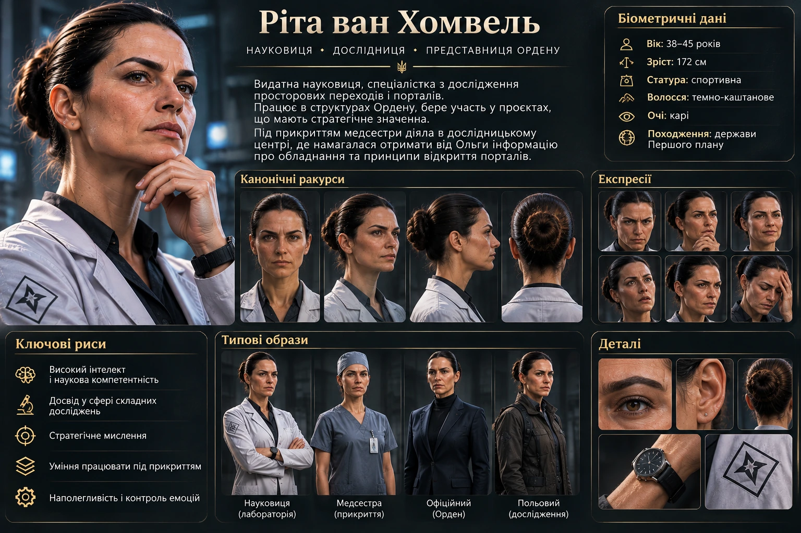

KEY INFORMATION
A scientist seeking the laws of space
Mila van Homvel is a professor and PhD, specialising in the physics of nonlinear spatial-wave fields and the mechanisms of their topological stabilisation. She worked at several major research centres and took part in strategically significant projects. In recent years, she has focused particularly on spatial-wave fields and portal technology.
Age: approximately 38–45 (visual reference)
Height: 172 cm (visual reference)
Build: athletic
Appearance: dark chestnut hair, brown eyes
Origin: a state of the First Plan (visual reference; no specific country named)
Academic status: professor, PhD
Specialisation: nonlinear spatial-wave fields and their topological stabilisation
Former affiliation: a research centre connected to the Order
CHARACTER BACKGROUND
Rich, the Order and broken trust
Mila worked at one of Europe’s largest research centres. Officially, it was an independent institution funded internationally; in reality, it belonged to the Order. There she had access to advanced equipment and research unavailable in most other laboratories. Rich, someone close to her, worked there as well.
After Rich was killed, Mila learned that he had secretly gathered information about the Order and passed it through his own channels. She had known nothing about his espionage. The Order later acknowledged that Mila had not been involved in Rich’s activities, apologised, reinstated her position and restored her laboratory access. But the experience changed her: she resolved to find those who had ordered Rich’s death and strip them of their power and influence.
WORKING UNDER COVER
Olha and the search for portal technology
Mila continued her research at an Order facility beneath an old mountain. For more than a year she had been trying to solve a crucial uncertainty in her spatial-field calculations when she saw footage of a girl opening a portal and leading people away from a missile strike. Mila realised this could help complete her theory. She began tracking the girl and eventually ordered her abduction.
The girl was Olha. Mila worked undercover at the research centre as a nurse and tried to obtain information about portals and the equipment she believed must be used to open them. She used pressure and torture, while concealing the abduction from the Order’s leadership. This became one of the reasons for her later capture.
AFTER CAPTURE
A new opportunity for research
After her capture, Mila was placed under the supervision of the Kharakternyky. Olha was assigned to communicate with her and clarify the circumstances of her activities. Mila, in turn, was offered access to technologies and developments directly related to her field. She was not required to provide intelligence about the Order: the offer was an opportunity to continue her scientific work.
Mila received a thought-link bracelet and began learning about technologies from other plans. She studied portal amplifiers, the bracelet’s operating principles and unfamiliar scientific materials. This led her to Noil’s research: the Ragati defensive module proved closely related to her own work.
COLLABORATION WITH NOIL
Improving the protective field
Mila quickly found common ground with Noil. She contributed her own spatial-wave research to his work. Together they changed how the protective field was generated: instead of sustaining the entire volume continuously, the system creates coordinated sectors and reallocates energy where protection is needed. Mila proposed a solution that reduced switching losses and helped stabilise the field boundaries.
The improved module became more compact and could fit into a backpack-sized carrier, although it remained heavy. Mila and Noil also began adapting the system for Marko’s robotic platforms. It is a promising development, but its reliability in combat still requires testing.

Traits and work appearances from the visual reference
Key traits: high intelligence and scientific competence, experience with complex research, strategic thinking, the ability to work undercover, persistence and emotional control. The visual reference shows her in a laboratory coat, medical uniform, formal Order clothing and field clothing for research work.
Confirmed relationships
- Rich: someone close to Mila; his death became the reason for her desire for revenge.
- Olha: Mila’s former captive, later her contact and guide in the world of the Kharakternyky.
- Noil: scientific partner in researching and improving the defensive module.
- Marko: coordinates the adaptation of the defensive system for robotic platforms.